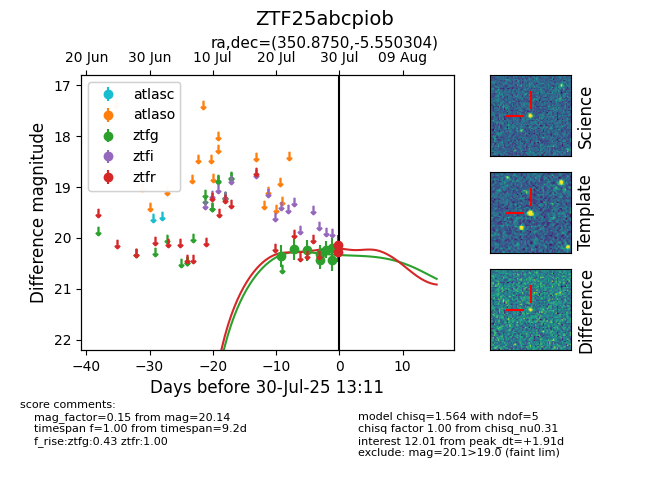

Target ZTF25abcpiob at 2025-07-30 13:11, see:
FINK: fink-portal.org/ZTF25abcpiob
Lasair: lasair-ztf.lsst.ac.uk/objects/ZTF25abcpiob
ALeRCE: alerce.online/object/ZTF25abcpiob
alt names
ZTF25abcpiob (ztf,fink)
coordinates:
equatorial (ra, dec) = (350.8750,-5.55030)
galactic (l, b) = (74.8702,-59.94054)
photometry
last ztfg=20.21, ztfr=20.14
8 ztfg, 2 ztfr detections
